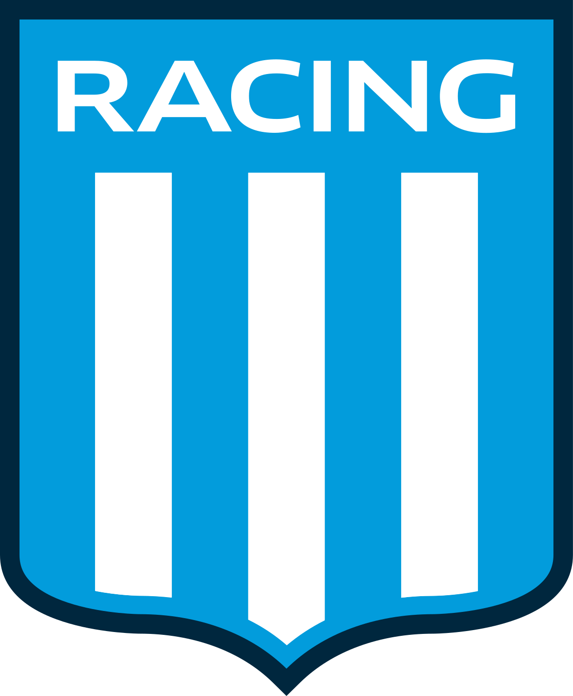

RACING CLUB

Racing Club, conocido popularmente como La Academia, es una entidad polideportiva con sede en Avellaneda, ciudad ubicada en el Gran Buenos Aires, Argentina. Fue fundado como club de fútbol el 25 de marzo de 1903, con la particular de ser el primer club argentino creado íntegramente por criollos.5 Los colores que identifican a la institución son el celeste y el blanco, utilizados en honor a los colores patrios de la República Argentina. Racing Club ganó siete campeonatos de Primera División consecutivos entre 1913 y 1919, consiguiendo múltiples récords como ser el primero de los Cinco grandes del fútbol argentino en salir campeón, bicampeón y tricampeón; también es el primer y único equipo argentino en lograr el tetracampeonato, el pentacampeónato, el hexacampeónato y el heptacampeónato en la historia argentina (récords aún en vigencia en el fútbol autóctono), además de ser el primer equipo heptacampeón mundial y el único de todo el continente en alcanzar dicha hazaña hasta hoy.
| Máximos goleadores | Máximas presencias | |
|---|---|---|
| 1 | Alberto Marcovecchio (179) | Natalio Perinetti (405) |
| 2 | Evaristo Barrera (136) | Gustavo Costas (337) |
| 3 | Juan José Pizzuti (118) | Agustín Cejas (334) |
| 4 | Llamil Simes (106) | Claudio Úbeda (329) |
| 5 | Natalio Perinetti (103) | Juan C. Cárdenas (321) |
Racing Campeón
En el verano de este año se consagró campeón tras ganarle a Boca por 2-1.
El primer grande
INTERNACIONALES
En la Copa Libertadores 1967 Racing se consagra campeón de la edición más extensa de la historia de la competencia al derrotar a Nacional en una reñida final por 2 a 1 con goles del brasilero João Cardoso y de Norberto Raffo. El goleador de la competición fue el delantero académico Norberto Raffo, con 13 tantos convertidos. Racing es el equipo con más victorias en la historia del certamen (14).
El plantel campeón de la Copa Libertadores 1967: Roberto Perfumo, Juan C. Rulli, Oscar Martín, Alfio Basile, Juan C. Cárdenas, Humberto Raffo, Humberto Maschio, Miguel Ángel Mori, Agustín Mario Cejas, Rubén Díaz, Juan José Rodríguez, Fernando Parenti, João Cardoso, Nelson Chabay, Jaime Martinoli, Néstor Rambert, Antonio Spilinga, Antonio Manillo, Rodolfo Vilanoba, Luis Carrizo y Oscar Cáceres.
Racing club fue el primer campeón del mundo Argentino. En la Copa Intercontinental de 1967 se consagra campeón derrotando al poderoso Celtic Football Club, campeón de la Liga de Campeones de la UEFA. En el partido de ida, en Hampden Park en Glasgow, Escocia, Racing perdió por 1 a 0 con gol de Billy McNeill. En el de vuelta, en Avellaneda, Argentina, ganó por 2 a 1, con goles de Norberto Raffo y de Juan Carlos Cárdenas; forzando un tercer partido.